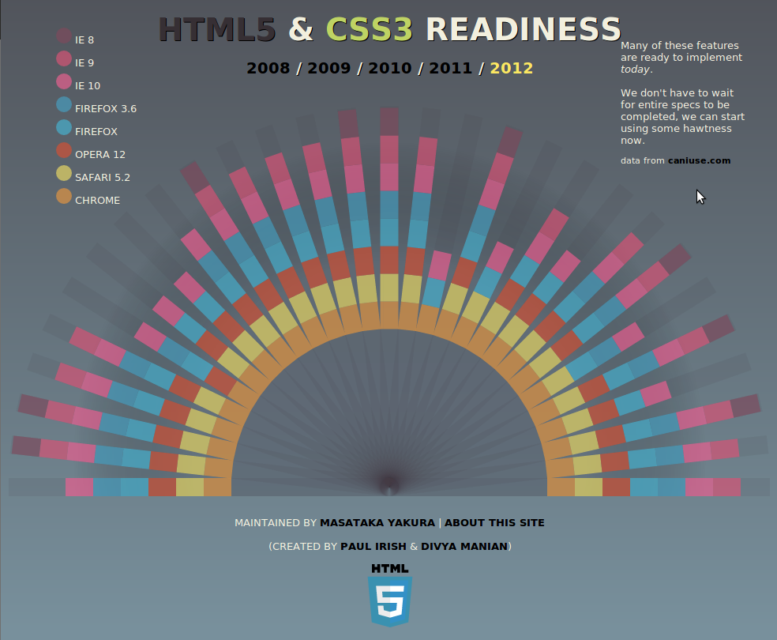
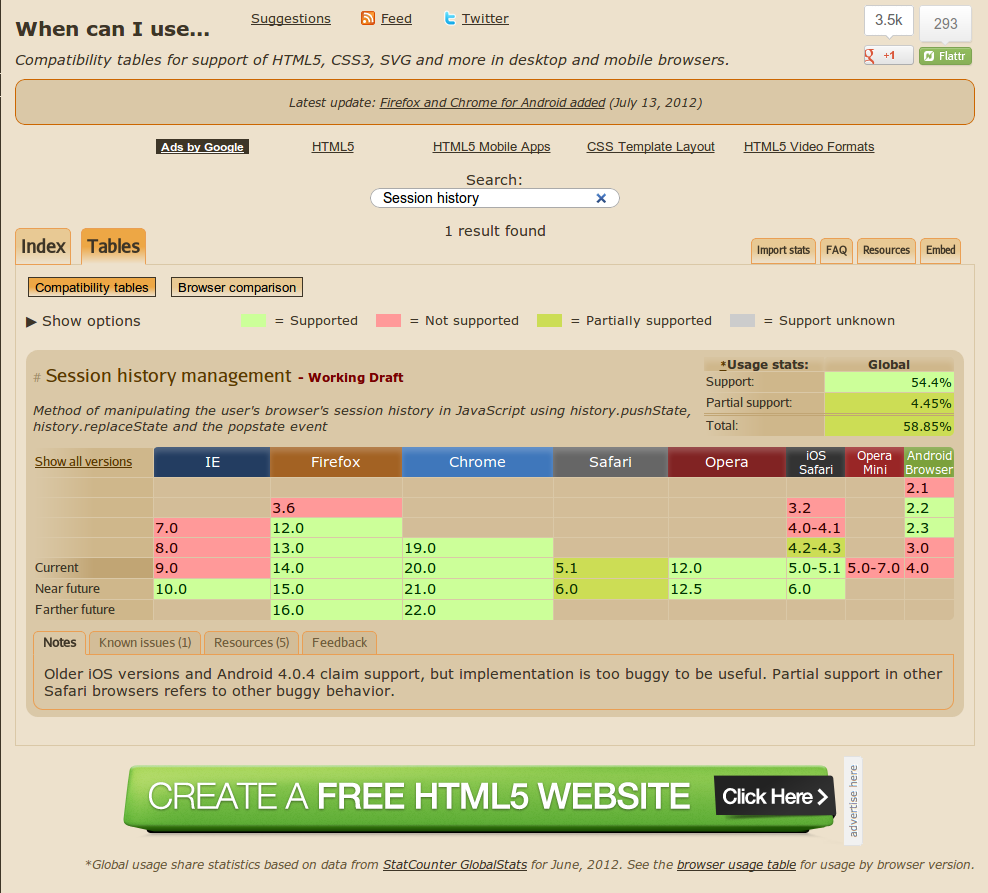
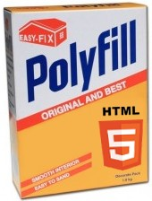
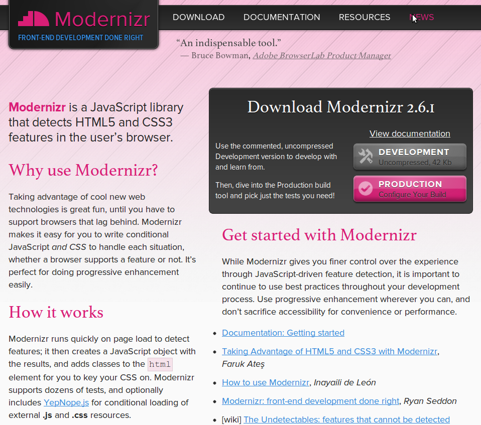
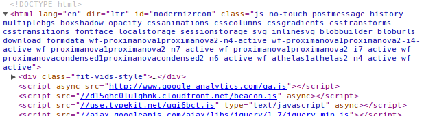
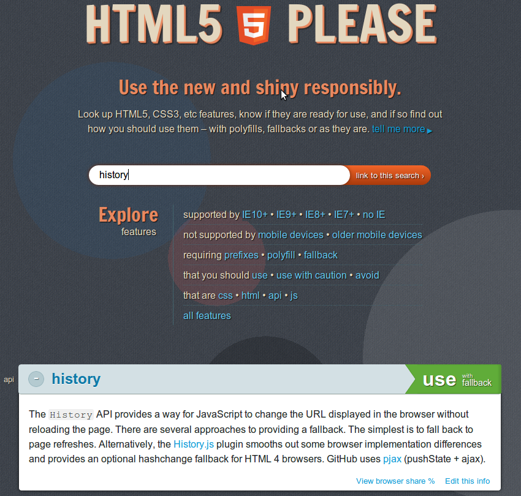
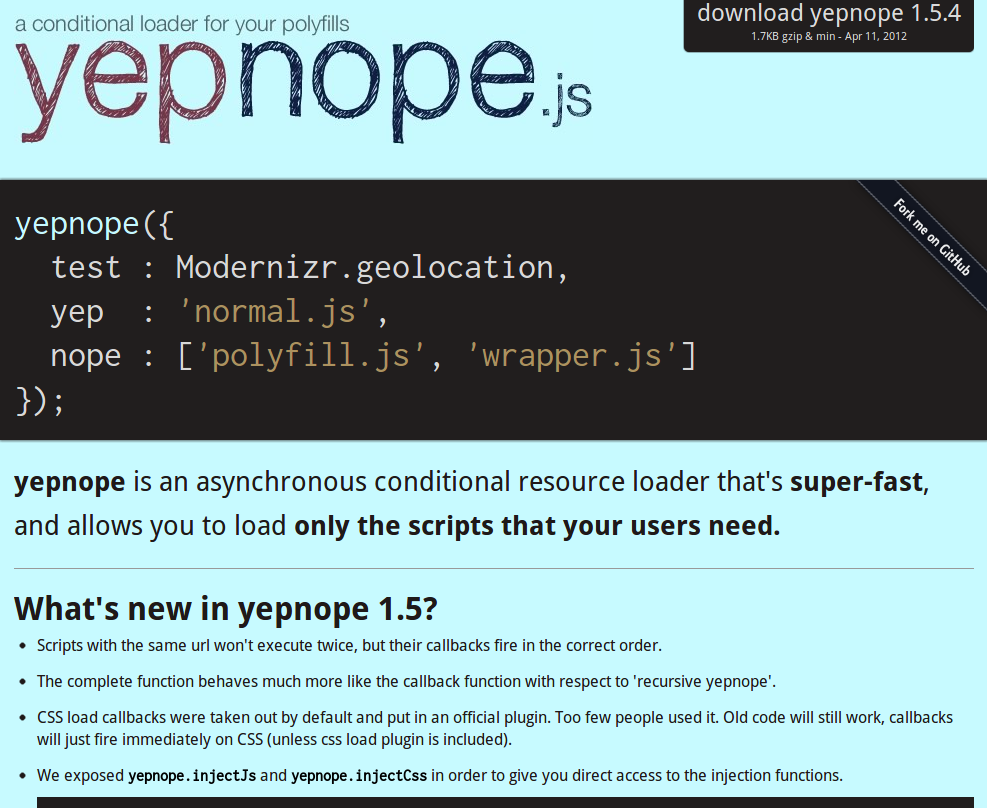

.center.imgbg # Hva om jeg vil bruke <br /> HTML5 funksjoner i dag? <br /> <br /> <br /> <div class="presenter"> ## Ivar Conradi Østhus ### JavaZone 2012 </div> .itera-logo[ ] <div class="bottom"> **epost: ** <a href="mailto:ivarconr@gmail.com" class="social" target="_blank">ivarconr@gmail.com</a> </br> **twitter: **<a href="http://twitter.com/ivarconr" class="social" target="_blank">@ivarconr</a> </div> --- # HTML5 rocks! - HTML5 strukturelementer (`<nav>`, `<header>`, `<footer>`) - Web Storage (*) - Web Sockets (*) - Web Workers - History API - Video - Audio - Canvas - Offline - WebGL - Nye form-elementer - Figur-element - ... .bottom[_(*) Teknisk sett ikke en del av HTML5_] --- .big # HTML5 - ... har mange nye kule funksjoner - ... gir mange nye muligheter - ... forenkler min utviklerhverdag <br /> <div class="box important center"> __Jeg vil bruke HTML5 funksjoner .underline[i dag]!__ </div> --- .big # Problemet - Ukjente elementer (`<article>`, `<section>`, `<footer>`, ..) styles ikke - Nye funksjoner er ikke tilgjengelig i gamle nettlesere - Varierende støtte av HTML5 funksjoner blant nettleserene - Rykende ferske funksjoner er ikke tilgjengelig i alle moderne nettlesere samtidig... --- .imgbg # http://html5readiness.com  --- .imgbg # http://caniuse.com  --- .imgbg # Det største problemet: .red[oldIE] --- # Ikke .red[bare] et .blue[IE] problem! ### Noen eksempler: - Color Input - Microdata API - History API - Fullscreen API - Audio API - Page Visibility API - IndexDB - meter taggen - ...osv <br /> <div class="center box important"> __Nye funksjoner blir ikke tilgjengelig i alle nettlesere samtidig__ </div> --- .center.middle.imgbg # <br />Jeg vil ikke begrenses til funksjoner som støttes av ALLE nettlesere!<br /><br /> --- # Løsningen! <br />  <br /> <span class="site big"> A polyfill, or polyfiller, is a piece of code (or plugin) that provides the technology that you, the developer, expect the browser to provide natively. Flattening the API landscape if you will. </span> <br /> .author[Remy Sharp] --- # Polyfilling lar oss bruke moderne funksjoner i dag! - **Implementerer støtte i (gamle) nettlesere** - Typisk via JavaScript, HTML og CSS - Også via fallbacks: Java, Flash og Silverlight - **Lar oss kode for fremtiden** - Vi følger standarden - Trenger ikke vente til nettleseren følger standarden - Vi slipper å lære nye API'er - **Gir alle brukerene _samme_ opplevelse** - Slipper flere versjoner av samme nettside --- .big # Vanlige polyfills - html5shim - respond.js - CSS3Pie - flashcanvas - history.js - socket.io - +++ <br /> <div class="important box" style="font-size: 22px;"> **God oversikt over tilgjengelige polyfills:** [github.com/Modernizr/Modernizr/wiki/HTML5-Cross-browser-Polyfills](https://github.com/Modernizr/Modernizr/wiki/HTML5-Cross-browser-Polyfills) </div> --- .imgbg.middle.center # <br />Hva støtter nettleseren? <br /><br /> <!-- - **Generell HTML5 support?** - HTML5 er en samling av mange individuelle funksjoner - Få (ingen) nettlesere støtter _alt_ - **Nettleser-sniffing?** - Nettlesere finnes i mange typer og versjoner - Støtter ulike funskjoner i ulike versjoner - Oppdateres hyppig - Fungerer dårlig! vi trenger noe bedre... --> --- .big # Feature detection - Verifisere støtte for konkrete funksjoner - Gir riktig svar selv når nettleseren innfører støtte for aktuell funksjon - Uavhengig av __nettleser__ og __versjon__! <br /><br /> <div class="box important"> __Gjennom feature detection vet vi når det er behov for en polyfill!__ </div> --- .imgbg  <div class="infobox"> <ul> <li>Tester 40+ moderne web funksjoner (CSS & HTML5)</li> <li>Holder informasjon om hva som støttes i et JS-objekt</li> <li>Legger til klasser på html-elementet som indikerer hvilke features som støttes</li> </ul> </div> --- # Modernizr eksempeler #### Klasser på html-elementet:  #### Sjekke støtte i JavaScript: .javascript if(Modernizr.localstorage) { //Nettleseren støtter localstorage!! } else { //Nettleser støtter ikke localstorage } --- <!-- .imgbg # Hva kan jeg bruke? Og Hvordan?  --> .center.imgbg # Skal vi __polyfille__ .red[ALT]? --- .big # Ytelse - Må ikke glemme at polyfill kommer med en ekstra kostand! - Hvor raske er våre polyfiller? - Er det verdt kostnaden? - .underline[Kan vi klare oss uten?] <div class="box important"> ** Ofte helt greit å gi forskjellig opplevelse til forskjellige nettlesere! ** </div> --- .big # Bare hvis du må! - Ikke last polyfills unødvendig - Unødvendig lasting straffer moderne nettlesere - Feature detection avgjør om en polyfill er nødvendig - Last polyfills asynkront, hvis du må --- .imgbg  <!-- yepnope laster JavaScript asynkront ved behov. Kan kombineres med Modernizr! --> --- # Takk for meg! <div class="big"> - Polyfilling lar oss bruke moderne WEB-funksjoner i dag - Bruk feature detection - Tenk på ytelsen - Ikke last polyfills unødvendig </div> <div class="details"> ** Ivar Conradi Østhus** <br /> <a href="mailto:ivarconr@gmail.com" class="social" target="_blank">ivarconr@gmail.com</a> <br /> <a href="http://twitter.com/ivarconr" class="social" target="_blank">@ivarconr</a> <br /> <br /> **Presentasjon** <br /> <a href="http://ivarconr.github.com/polyfilling" class="social" target="_blank">ivarconr.github.com/polyfilling</a> </div> <a href="http://smidig2012.no">.smidig-logo[ ]</a> <a href="http://itera.no">.itera-logo[ ]</a> <div class="bottom small"> .gray[Presentasjon laget med: <br /> <a href="http://github.com/gnab/remark" class="social" target="_blank">github.com/gnab/remark</a>] </div>